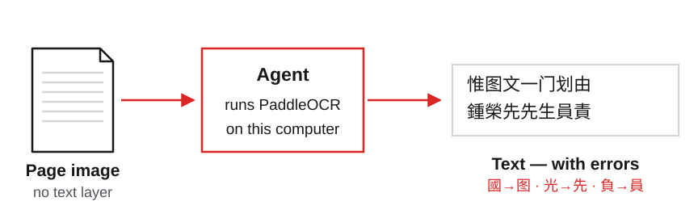
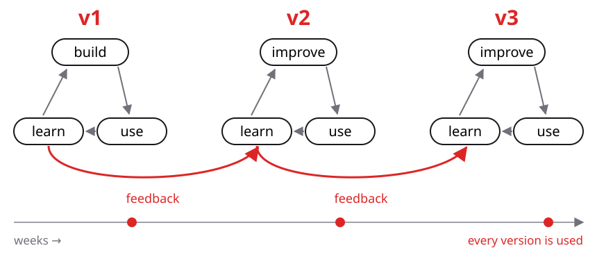
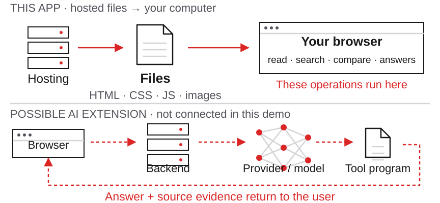
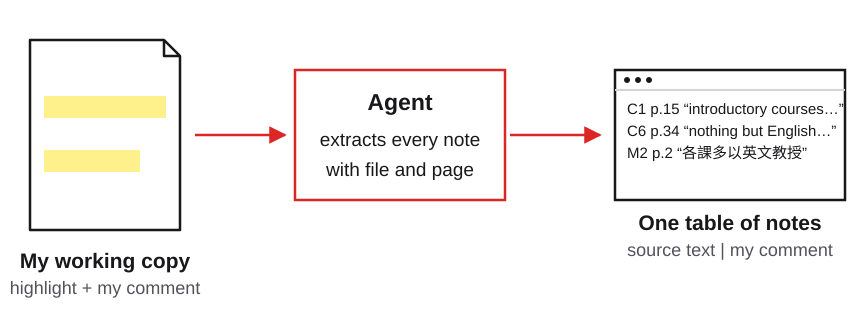
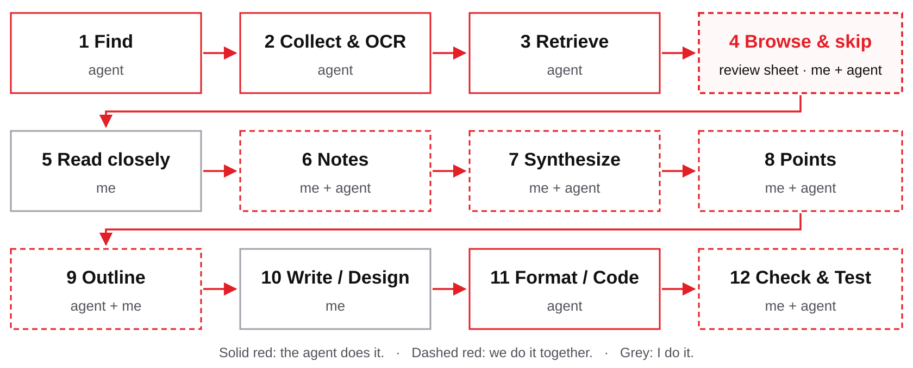
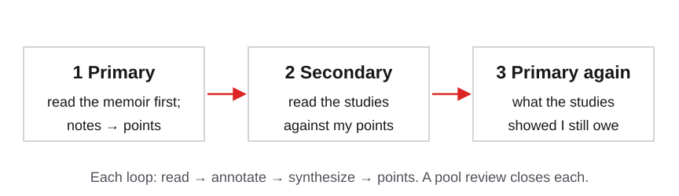
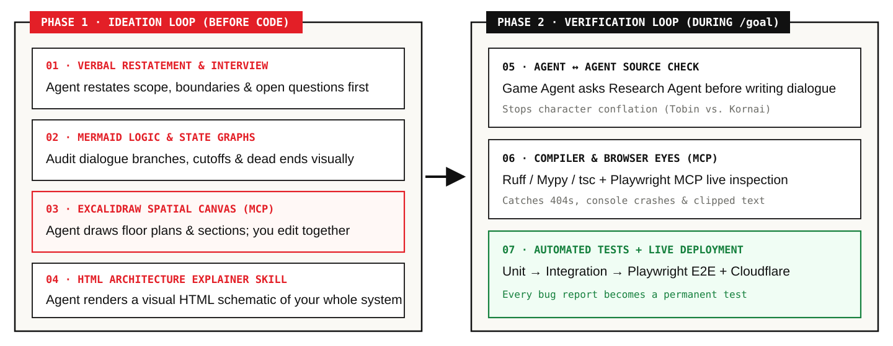
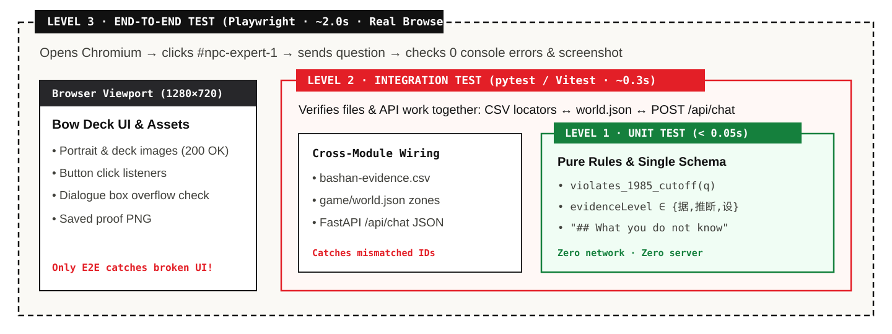
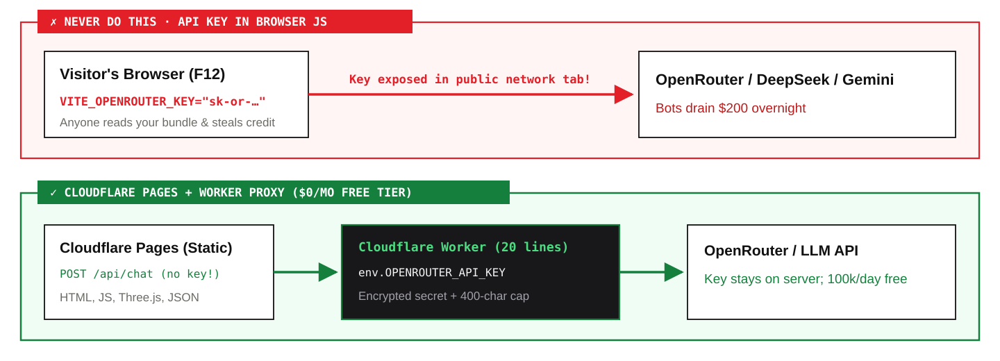

7 min strictly
5 min live demo + 2 min Q&A
Bo An · Lingnan University · 2026-11-18 · Reading edition · Slides
Live check-in today · Final hand-in next Wednesday
Session Eleven: four-loop live showcase and final hand-in guide for Wednesday 25 November.
7 min strictly
5 min live demo + 2 min Q&A
Wed 25 Nov
working build + Overleaf paper (biblatex-chicago)
Today: 7-minute live demos and next week's final build + Overleaf paper hand-in.
5m demo + 2m Q&A).plan.md + /goal statementvitest / pytest + playwright live据 / 推断 / 设@playwright/mcp + headless Playwright checksOpen your live Cloudflare https:// URL first · Mention 1 concrete difficulty.
Each presenter has 7 minutes: open your live Cloudflare URL, show all four loops, and name one difficulty.
Guide and template zip: 508-coursework/week-11/
Instructions and dhg508-overleaf-template.zip are in 508-coursework/week-11/.
0 leaked keys in Git).tex/.bib saved in paper/Freeze features, make your live URL, tests, and Overleaf paper run cleanly, and bring any stubborn final bug to class next Wednesday.
`evidence.csv`
`claim · locator · 据/推断/设 · limit`
`make_evidence_table.py`
writes `evidence-table.tex`
`main.tex` + `references.bib`
`XeLaTeX` + `biblatex-chicago` → PDF
evidence.csv generates evidence-table.tex, which compiles with main.tex and references.bib on Overleaf.
dhg508-overleaf-template.zip.$ cp -R 508-coursework/week-11/paper-template \ projects/my_project/paper $ python3 projects/my_project/paper/make_evidence_table.py Wrote paper/evidence-table.tex
dhg508-overleaf-template.zipXeLaTeXpaper/design-paper.pdf) + Source back to GitUpload dhg508-overleaf-template.zip to Overleaf, select XeLaTeX, click Recompile, and commit the PDF and sources back to paper/.
biblatex-chicago (Notes-Bibliography).\usepackage[notes, backend=biber, autolang=other, isbn=false]{biblatex-chicago} \addbibresource{references.bib} % Place \autocite[page]{key} after punctuation: Demand management never produces a certain result.\autocite[150]{tobin1986macro} \printbibliography[title={Bibliography}]
@incollection{tobin1986macro,
author = {Tobin, James},
title = {Luelun fei jizhongxing jingji
de hongguan kongzhi},
titleaddon = {略論非集中型經濟的宏觀控制},
usere = {On Macroeconomic Control in
Decentralized Economies},
booktitle = {Hongguan jingji de guanli yu gaige},
booktitleaddon = {宏觀經濟的管理與改革},
publisher = {Jingji ribao chubanshe},
location = {Beijing},
date = {1986},
pages = {149--158}
}
Use biblatex-chicago (\autocite[page]{key} after punctuation) with BibLaTeX entries in references.bib.
main.tex (3–6 PDF pages).historical question + why interactive?
source limits + 3 scholarly works (\autocite)
stack, [限定] cutoffs + schematic.png
\input{evidence-table.tex} (据 / 推断 / 设)
automated tests + 2 testers' fixes
what worked, what failed, limits + AI tools used
Six short sections in main.tex (3–6 pages total): question, sources & 3 scholarly works, architecture & schematic, CSV evidence table, verification, and post-mortem.
├─ README.md live URL + run & test cmds ├─ docs/ │ ├─ plan.md │ ├─ schematic.png │ └─ user-feedback.md ├─ data/ notes & evidence.csv ├─ src/ & tests/ └─ paper/ ├─ make_evidence_table.py ├─ evidence-table.tex generated from CSV ├─ references.bib >=3 scholarly works ├─ main.tex biblatex-chicago └─ design-paper.pdf compiled PDF
paper/design-paper.pdfCommit your working build, passing tests, and paper/{main.tex, references.bib, evidence-table.tex, design-paper.pdf} before Wednesday 25 November.
Bring your running build, design-paper.pdf, and any final bug next Wednesday (25 Nov).
Freeze scope, compile design-paper.pdf on Overleaf, and bring your finished build next Wednesday.
Key ideas, rules, and diagrams from Sessions 1 through 10
Reference packet summarizing the core concepts, rules, and diagrams from Sessions 1 through 10 of DHG508.
Model + Instructions + Tools + Loop; foreign keysraw/ vs. processed/; 3 doc types; Markdown diffshits.md → review sheet → notes → points据 / 推断 / 设; world checks actionsscholarly-search; index refactor; @handover.md/goal, Tests & Deploy: plan.md, schematics, Browser MCP, 3-tier tests, CloudflareOverview of all ten content sessions—from reading primary scans, building relational databases, and structuring agent skills to twelve-step historical research, 3D/simulation design, automated verification, and public deployment.

sources/raw/; OCR and transcriptions go in sources/processed/Sessions 1–2: OCR and LLM transcription make scans searchable, not quotable (國文 → 图文); keep originals untouched in sources/raw/ and verify every quotation against the page image.
| Mode | Given | Returns | Who acts | When it stops |
|---|---|---|---|---|
| Completion | a prompt prefix | continuation text | no one | token limit or stop sequence |
| Chat | the transcript so far | one reply | you | after one reply |
| Agent | record: rules, tools, observations | a reply or a tool call (JSON) | the harness program | no more tool calls (or step cap) |
| ReAct | same full record | thought → tool call or reply | the harness program | when it judges evidence suffices |
Same model inside — what changes is the program outside: Agent = Model + Instructions (Skills) + Tools + Loop.
Session 3: A language model only predicts tokens; an agent wraps that model in an external program loop that supplies instructions, executes tool calls (files, shell, APIs), appends observations to the transcript, and enforces permissions.
# YAML frontmatter loaded first: name: history-db description: Query the 1908 roster database and cite every row by [id]. # Body loaded only when invoked: 1. Answer only from table rows; attach [id]. 2. State gaps plainly; never fill from memory.
people table: P2 李应林 → L2, P3 冼玉清 → L2places table: L2 | 南海 | 广州府 | 佛山 (written once)place_id): names vary (钟荣光 / 鍾榮光, 南海 / 南海县); stable IDs prevent contradictions across 300 rowsSession 3: Skills load name + description first and pull full Markdown instructions on demand; relational databases store each entity once and link tables by stable IDs (place_id → id).
├─ AGENTS.md rules that always hold ├─ sources/ │ ├─ raw/ originals, never edited │ └─ processed/ OCR, crops, clean .md ├─ research/ design, journal, notes, refs ├─ artifacts/ large dumps/DBs (gitignored) └─ code/ repeatable scripts
README.md / SKILL.md): what exists and where to look nextadd-data.md): step-by-step workflow pointing to schema filesAGENTS.md): short, hard rules (raw/ read-only; test before done)Session 4: Every file kind has one canonical folder so both humans and agents can find it; keep documents short and modular across index, procedure, and hard principles (AGENTS.md).

.docx: a 1-sentence edit in note.md is a readable 1-line git diff; .docx is a binary zip of 17 XML filesdesign-document.md: current plan (revise in place as evidence changes)research-journal.md: dated record of what changed and whySession 4: Ship small working iterations (v1 → v4) tracked in Git; plain-text Markdown gives clean line diffs, pairing a living design-document.md with a chronological research-journal.md.

HTML/CSS/JS): layout, local JSON search, pre-computed vectors ($0 per click)Session 5: Distinguish static frontend execution ($0) from backend API/model routing; pre-compute fixed lookups and embeddings locally rather than paying per visitor click.

sources/raw/filename, PDF page (+ printed page if different), highlighted text, and reader commentSession 5: Highlight and comment directly on a PDF working copy, then have an agent extract filename, PDF/printed page, source wording, and your comment separately so every note traces back to the page.

Session 6: Hand over bounded, verifiable steps to the agent (search, OCR, retrieval, extraction, formatting) while keeping close reading, judgment, and final claims in your own hands.
reading-list.md): read first vs. set aside + 1-line reason each, keeping page numbers (leads, not findings)
Session 6: Compress large search hit lists into a page-anchored review sheet (reading-list.md) to allocate close reading, and run three loops (Primary → Secondary → Primary again) testing points against counter-evidence.
Generate → Find visual references → Combine words + references → Inspect omissions → Revise嶺南大學)Session 7: Anchor 2D generation with sourced historical reference images, and decompose 3D objects part by part—using fonts for inscriptions, parametric scripts for regular geometry, and 3D generators only for isolated carved details.
据 (evidenced): directly stated on a cited page推断 (inferred): reasoned across sources设 (invented): created so the scene works[限定])say, look, walk); the world program checks rules and decides what actually happensSession 8: Mark every simulation element 据 / 推断 / 设, justify interactivity against a static film, restrict character memory to pre-cutoff perception, and keep world state transitions under deterministic program control.
scholarly-search skill: OpenAlex API + agent-browser (respecting robots.txt); Google Scholar / Baidu operated by you in browserdesign-document.md into an ~80-line master index linking to docs/characters/*.md & docs/scenes/*.md[据] / [推断] / [限定]) → writes handover.md + data/evidence.csv@handover.md to build scenes & JSON cardsSession 9: Search open indexes via API/CLI while respecting robots.txt, refactor overgrown design docs into a master index + modules, and hand off verified claims between Research and Implementation agents through committed files (handover.md + evidence.csv).
Plan mode, /goal, and two feedback loops.
Session 10: Long autonomous /goal runs drift when context compacts unless anchored to a written plan.md, pre-code ideation schematics (Mermaid, Excalidraw MCP, HTML visual-explainer), and automated runtime checks.


Session 10: Decouple CSV/JSON data and pure logic from UI so Vitest/pytest and @playwright/mcp verify code and historical rules automatically; ship static/WebGL builds on Cloudflare Pages ($0) with API keys isolated inside a Cloudflare Worker.
Made with Reslides (MIT), based on Slidev.